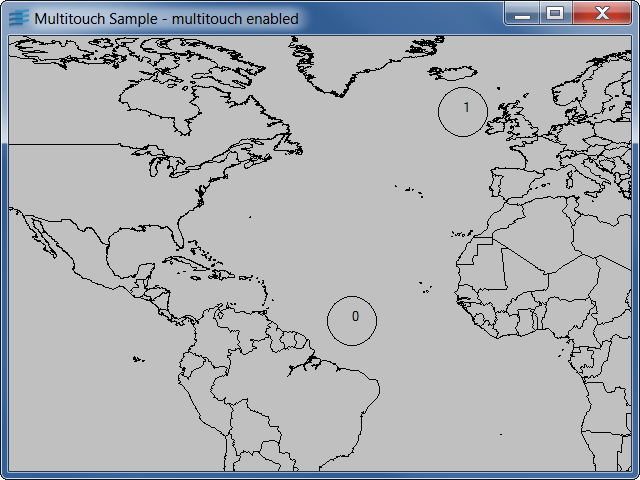

multitouchDemonstrates how to use Views multitouch events
This example shows you how to use multitouch events in an interactor: IlvTouchDown, IlvTouchMoved and IlvTouchUp. It assumes that the platform has a multitouch input device.
The example loads a world map ([ILVHOME]/views/data/DCW/world.ilv) that can be translated, zoomed and unzoomed with gestures.
We define a manager view interactor (subclass of IlvManagerViewInteractor) in order to handle events.
The interactor implements a set of simple gestures commonly used on most touch devices:
If only one touch point is active, the interactor is in "pan" mode (translation). As soon as a second touch point is active, the interactor enters in pinch/unpinch mode (zoom/unzoom).
In pan mode, we use an IlvTimer in order to manage the inertia: the translation does not stop at once when releasing the touch point, it continues and slows down until stop.
Note that because this example uses a regular IlvManager and we are simulating the equivalent of the touch-screen navigation provided by Views out-of-the-box, we create the manager view using the IlvNoTouchScreenNavigation flag, to prevent the default multi-touch interactions to be installed.
IlvEventIlvManagerViewInteractorIlvTimer